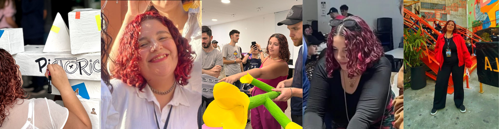
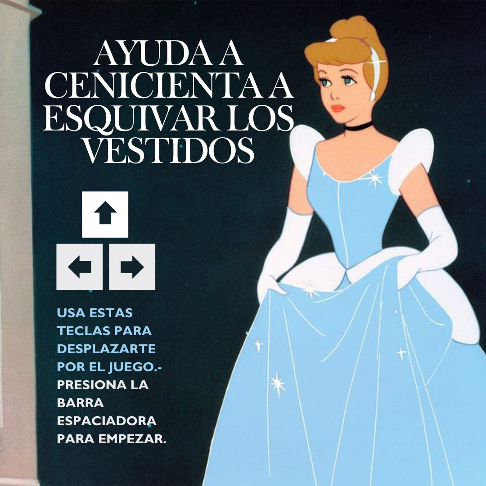
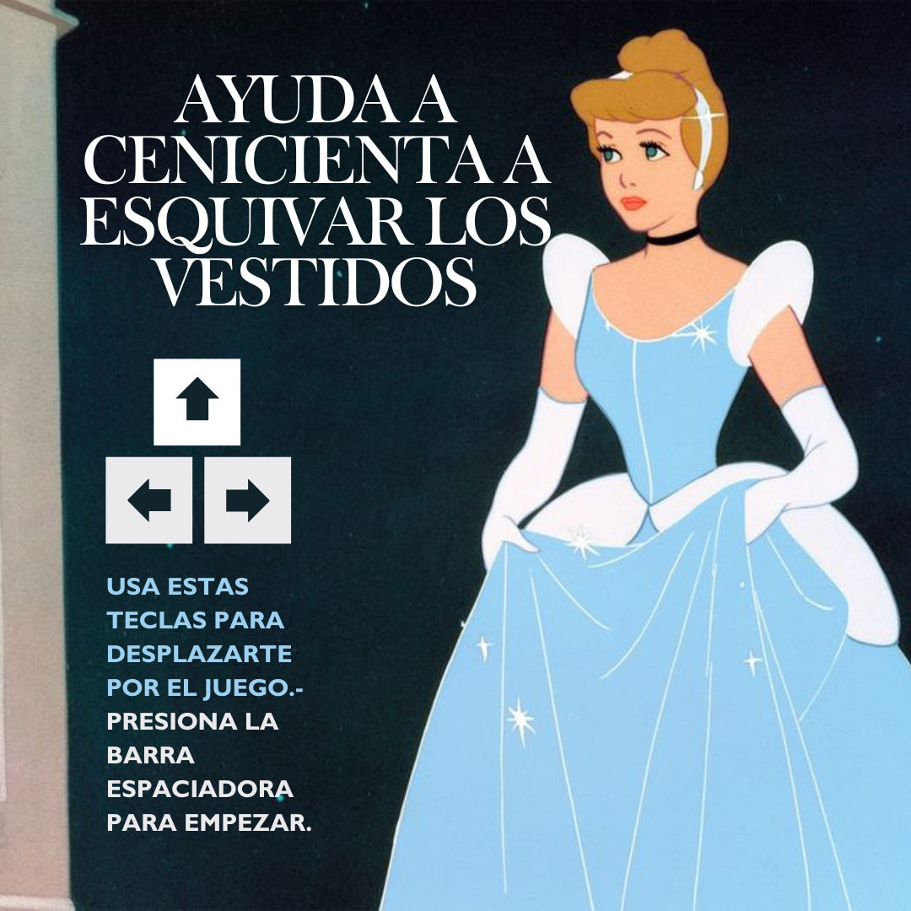

Mi nombre es Nayla Capurro, legajo 91331/8. Soy estudiante de la Licenciatura en Diseño Multimedial y a la vez ayudante de cátedra en la materia Taller de Diseño Multimedial 1. Ingresé a la carrera en el año 2022 y desde ahí me enamoré de todo lo que esta conlleva, luego de haber dejado la carrera de arquitectura anteriormente, fue gratificante encontrar algo que me guste tanto. Tecnología multimedial 1 es la única materia que tuve que recursar porque en el 2022 no me sentí capaz de poder llevarla a cabo. Pero cuando este año la cursé me gustó mucho el contenido y se volvió una de mis materias preferidas, me gustaría poder adentrarme en el tema de tecnologías web por mi parte.
Realizar una aventura gráfica en Processing puede parecer sencillo a primera vista, y llevarlo a cabo sabiendo los conceptos de programación lo facilita por supuesto. Pero tuve varios problemas en el trayecto, asi que te dejo unos tips que me funcionaron:
TIP N°1
.png)
Perderse entre tantas pantallas es muy común, por eso es recomendable tener un boceto con cada pantalla y una mini explicación de cada una para asi no perderse mientras programamos. Mi herramienta principal para bocetos de este tipo es Figma Jam, y también es recomendable tenerla impresa y a mano.
TIP N°2
Cuando hay que repetir tantas veces un recurso se pueden utilizar técnicas en Processing, pero personalmente prefiero tener esto: .png) Me gusta utilizar imagenes precargadas ya que los cálculos se me dificultan y tardo mucho más, asi que rpefiero la practicidad de tener a mano una imagen, al igual que las pantallas de fondo:

Me gusta utilizar imagenes precargadas ya que los cálculos se me dificultan y tardo mucho más, asi que rpefiero la practicidad de tener a mano una imagen, al igual que las pantallas de fondo:

Este juego comienza con la historia de La Cenicienta. Tiene finales alternativos dependiendo de que botón se elija, además está integraado un minijuego de temática ranitas y autos. Debes llegar al final correcto para ganar, ¡SUERTE!